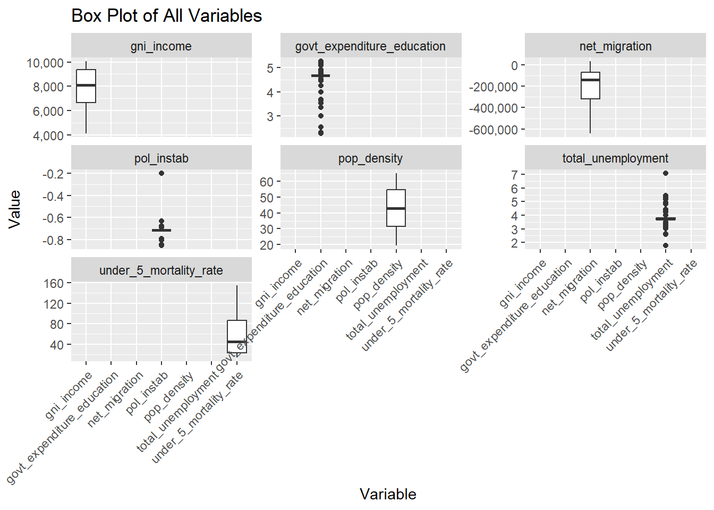
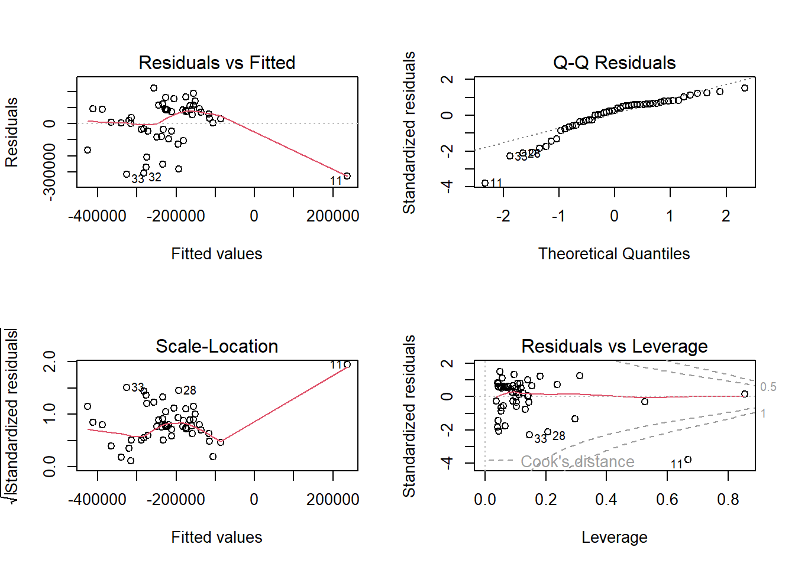
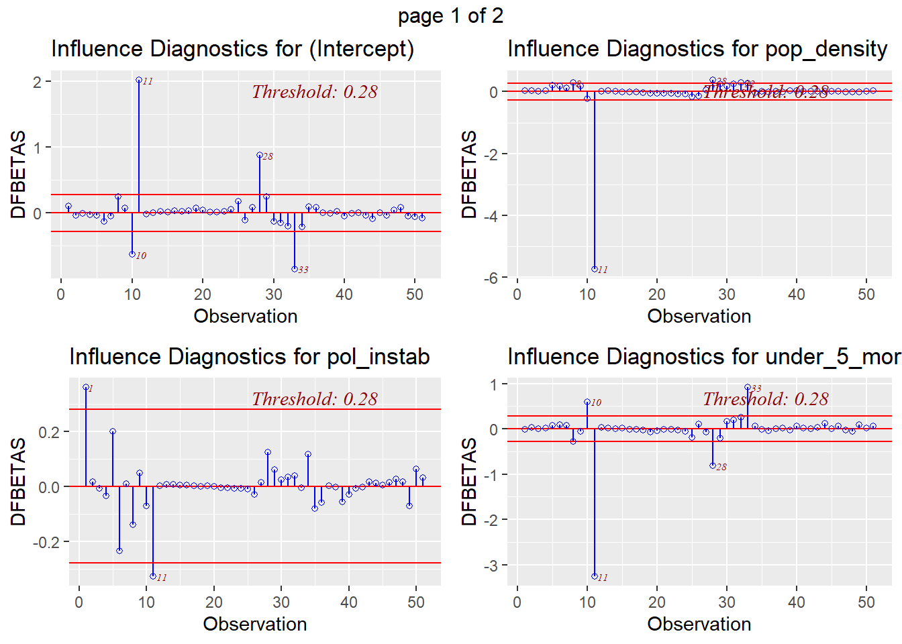
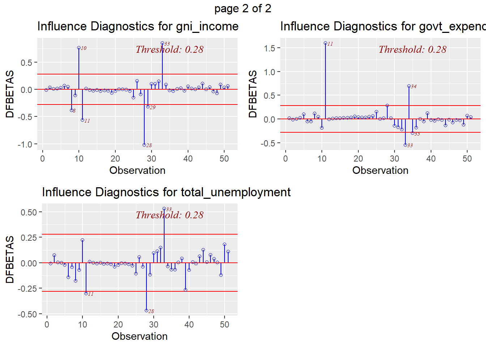
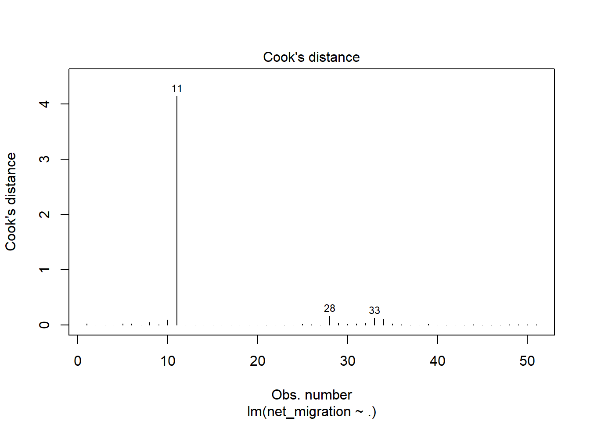

Mexico on the Move: How Macro Forces Drive Migration
R
Machine Learning
Migration
Author
Oluwatosin Orenaike
Published
February 13, 2024
Load Necessary Libraries
Migration patterns are a complex interplay influenced by a multitude of factors. This assessment delves into the case of Mexico, a country with a long history of emigration, exploring how persistent macro-level trends might fuel future migration flows. Mexico’s position as a major sending country, with a significant number of emigrants compared to immigrants, makes it a compelling case study for analyzing potential drivers of migration.
Data from the World Bank indicates Mexico has the highest number of emigrants (11.22 million) in the world, while immigration remains lower (1.2 million) World Bank - Population Review. Net migration figures further support this trend, with Mexico experiencing a net loss of -51,399 migrants in 2022 and an average negative net migration of -223,830 over the past 63 years World Bank.
The International Organization for Migration’s (IOM) framework guides this analysis, examining drivers of international migration at Macro, Meso, and Micro levels. While migration is likely to increase if current trends persist, this assessment focuses on Macro-level variables due to easier data access and modeling. More so allows us to build a strong foundation for analysis. This approach allows for future upscaling to continental or state levels. Analyzing Micro and Meso levels is recommended for in-depth understanding of country-specific nuances.
- General Caveat
It’s important to acknowledge that this analysis focuses on macro-level variables. While these factors provide valuable insights, they may not capture the full complexity of individual migration decisions. Micro and meso factors, such as individual circumstances, family networks, and local community dynamics, can also significantly influence people’s choices to migrate.
It’s important to recognize that machine learning models can inherit biases from the data used for training. The results presented here should be interpreted cautiously, acknowledging the potential for biases that might overestimate or underestimate the impact of certain factors.
Data were gathered from the following links and sources, incorporating specific variables relevant to the study:
Dependent Variables:
Net Migration: The difference between the number of people entering and leaving a geographic area over a specific period, serving as a proxy for population movement. World Bank - Net Migration
Independent Variables:
Economic Factors:
Employment Rate: Reflects the availability of jobs and the health of the economic environment. Regions with higher employment rates attract people due to better job opportunities, acting as a push or pull factor for migrants. This variable is closely linked to Unemployment rates, where lower unemployment rates indicate higher employment opportunities. World Bank - Unemployment
Income Levels: The average income or economic prosperity in a region, influencing migration as higher income levels often correlate with a higher standard of living. World Bank - Income Level
Social and Demographic Factors:
Mortality Rate: While not a direct predictor of migration, it can influence the desirability of a location indirectly through its impact on life expectancy and the quality of healthcare services. World Bank - Mortality Rate
Population Density: Provides insight into how densely populated a region is, which can impact migrants’ decisions. World Bank - Population Density
NetMigration = \(\beta_0\) + \(\beta_1\) x Political Instability + \(\beta_2\) x Mortiality rate (under 5) + \(\beta_3\)x unemployment + \(\beta_4\) x Government expenditure onEducation + \(\beta_5\) x GNI Income* x e
\(\beta_0\) as intercept, \(\beta_1\) , \(\beta_2\) , \(\beta_3\) , \(\beta_4\) , and \(\beta_5\) as coefficients
The model will try to understand what affects net migration (the difference between the number of people entering and leaving a country) by looking at several factors: political instability, mortality rate for children under 5 years old, unemployment rate, government spending on education, and Gross National Income (GNI) per capital.
Step 1: Data Gathering
Load the variables
# Load first set of dataset -------------------------# Define the base directorybase_dir <-"C:/Users/orenaike/OneDrive/02_JOBS/OT_CV/Jobs_Application/IOM/Interview_Prep/Prep_Grace"# Variables# Net Migration ~ pol_instab + pop_density + under_5_mortality_rate + total_unemployment + govt_expenditure_education + gni_income# Define subdirectoriessub_dirs <-c("API_EN.POP.DNST_DS2_en_csv_v2_1512_Pop_Density","API_SH.DYN.MORT_DS2_en_csv_v2_1984_mortality","API_NY.GNP.PCAP.KD_DS2_en_csv_v2_3157_GNI","API_SL.UEM.TOTL.NE.ZS_DS2_en_csv_v2_Unemployment","API_SE.XPD.TOTL.GD.ZS_DS2_en_csv_v2_14_govt_exp","API_SM.POP.NETM_DS2_en_csv_v2_105_Net migration")# Initialize an empty list to store data framesdf_list <-list()# Loop through each subdirectoryfor(dir in sub_dirs) {# Construct the full path to the directory full_dir <-file.path(base_dir, dir)# Find the CSV file that starts with "API" in the directory# csv_file <- list.files(full_dir, pattern = "^API.*//.csv$", full.names = TRUE) csv_file <-list.files(full_dir, pattern ="^API.*\\.csv$", full.names =TRUE)# Check if exactly one file is foundif(length(csv_file) ==1) {# Read the CSV file from row 5, skip the first 4 rows data <-read.csv(csv_file, skip =4, stringsAsFactors =FALSE)# Add the data frame to the list df_list[[dir]] <- data } else {cat("No file or multiple files found in", dir, "/n") }}# Concatenate all data frames in the list into oneall_data <-bind_rows(df_list) # The data is currently in wide format. We need to cover to Long for easy analysis # Check the structure of the concatenated data framedim(all_data)
[1] 1596 68
# load political instability data ----------------political_instab <-read_csv("C:/Users/orenaike/OneDrive/02_JOBS/OT_CV/Jobs_Application/IOM/Interview_Prep/Prep_Grace/P_Data_Extract_From_Worldwide_Governance_Indicators/0ac43a1d-ff11-4838-93a9-738e096ed561_Data.csv")
Rows: 219 Columns: 15
── Column specification ────────────────────────────────────────────────────────
Delimiter: ","
chr (15): Series Name, Series Code, Country Name, Country Code, 2000 [YR2000...
ℹ Use `spec()` to retrieve the full column specification for this data.
ℹ Specify the column types or set `show_col_types = FALSE` to quiet this message.
political_instab_v1 <- political_instab |> janitor::clean_names() |> dplyr::filter(series_name =="Political Stability and Absence of Violence/Terrorism: Estimate")head(political_instab_v1) #check the first few
# A tibble: 6 × 15
series_name series_code country_name country_code x2000_yr2000 x2013_yr2013
<chr> <chr> <chr> <chr> <chr> <chr>
1 Political Sta… PV.EST Afghanistan AFG -2.43896889… -2.51934909…
2 Political Sta… PV.EST Albania ALB -0.53998959… 0.091929785…
3 Political Sta… PV.EST Algeria DZA -1.43257737… -1.20237147…
4 Political Sta… PV.EST American Sa… ASM .. 0.928985774…
5 Political Sta… PV.EST Andorra AND 1.166981458… 1.283926010…
6 Political Sta… PV.EST Angola AGO -2.03817391… -0.39123347…
# ℹ 9 more variables: x2014_yr2014 <chr>, x2015_yr2015 <chr>,
# x2016_yr2016 <chr>, x2017_yr2017 <chr>, x2018_yr2018 <chr>,
# x2019_yr2019 <chr>, x2020_yr2020 <chr>, x2021_yr2021 <chr>,
# x2022_yr2022 <chr>
Step 2: Combined all Sourced data into one
### Treating first set of data from world bank--------------------------all_data_V1 <- all_data |> janitor::clean_names() |>pivot_longer(cols =starts_with("x"), # Select columns to gathernames_to ="year", # Name of the new column for yearsnames_prefix ="x", # Remove 'x' prefix from year valuesvalues_to ="value"# Name of the new column for values ) ## Filter countries of Choice and rename variablesall_data_V2 <- all_data_V1 |> dplyr::mutate(indicator_name =case_when( indicator_name =="GNI per capita (constant 2015 US$)"~"gni_Income", indicator_name =="Mortality rate, under-5 (per 1,000 live births)"~"Under-5_Mortality_Rate", indicator_name =="Net migration"~"Net_Migration", indicator_name =="Population density (people per sq. km of land area)"~"Pop_Density", indicator_name =="Unemployment, total (% of total labor force) (national estimate)"~"Total_Unemployment", indicator_name =="Government expenditure on education, total (% of GDP)"~"Govt_expenditure_education",TRUE~ indicator_name )) |> dplyr::select(-indicator_code, -country_code) |>mutate(year =as.numeric(year))### Treating second data source political instability ------------political_instab_v2 <- political_instab_v1 |>gather(key ="year", value ="value", -c(series_name, series_code, country_name, country_code)) |> dplyr::mutate(indicator_name =case_when( series_name =="Political Stability and Absence of Violence/Terrorism: Estimate"~"pol_instab", TRUE~ series_name )) |>mutate(year =as.numeric(gsub("x(\\d+)_yr\\d+", "\\1", year))) |>mutate(value =as.numeric(ifelse(value =="..", NA, value))) |> dplyr::select(-series_code, -country_code, -series_name)# combined all datacombined_data <-bind_rows(political_instab_v2, all_data_V2)# filter for country of interest combined_data_v1 <- combined_data |> dplyr::filter(country_name =="Mexico")# Convert from long to wide formatcombined_data_v2 <- combined_data_v1 |>pivot_wider(names_from = indicator_name, # Use the indicator name for new column namesvalues_from = value # The values to populate in the new columns ) |>filter(country_name =="Mexico") |>filter(!is.na(year)) |> janitor::clean_names()head(combined_data_v2)
### Data Overview before Cleaningsummary(combined_data_v2)
country_name year pol_instab pop_density
Length:63 Min. :1960 Min. :-0.8539 Min. :19.26
Class :character 1st Qu.:1976 1st Qu.:-0.8039 1st Qu.:31.10
Mode :character Median :1991 Median :-0.7142 Median :42.88
Mean :1991 Mean :-0.6999 Mean :42.91
3rd Qu.:2006 3rd Qu.:-0.6812 3rd Qu.:54.98
Max. :2022 Max. :-0.2002 Max. :65.18
NA's :52 NA's :2
under_5_mortality_rate gni_income total_unemployment
Min. : 13.20 Min. : 4098 Min. :1.760
1st Qu.: 22.30 1st Qu.: 6647 1st Qu.:3.275
Median : 44.35 Median : 8080 Median :3.733
Mean : 58.09 Mean : 7839 Mean :3.936
3rd Qu.: 87.42 3rd Qu.: 9380 3rd Qu.:4.441
Max. :155.20 Max. :10073 Max. :7.095
NA's :1 NA's :30
govt_expenditure_education net_migration
Min. :2.282 Min. :-641663
1st Qu.:3.681 1st Qu.:-320352
Median :4.658 Median :-138534
Mean :4.285 Mean :-223830
3rd Qu.:4.948 3rd Qu.: -72537
Max. :5.257 Max. : 33094
NA's :35
A brief overview of the data reveals the presence of missing values (NAs), which require attention before proceeding with modeling.
Step 3: Data Checks and Cleaning
This step is crucial for ensuring the quality and reliability of our dataset before moving on to further analysis or modeling. Our approach involves several key actions:
Remove rows with NA values and handle outliers as needed. - Handling Missing Values - Outlier Detection and Management - Check for correlation in variables - Encode the categorical if needed
- Handling Missing Values
Check missing values and justification for mean imputation
# Initial check for missing valuesmissing_values <-sapply(combined_data_v2, function(x) sum(is.na(x)))print(missing_values)
# Function to calculate and print skewness for selected columns with skewness rounded to two decimal placescalculate_skewness <-function(data, columns) {for (column in columns) {# Exclude NA values for skewness calculation valid_values <-na.omit(data[[column]])# Calculate skewness skewness <-sum((valid_values -mean(valid_values))^3/sd(valid_values)^3) / (length(valid_values) -1)# Print skewness with two decimal placesprint(sprintf("Skewness for %s: %.2f", column, skewness)) }}# Define the columns you want to analyzecolumns_to_analyze <-c("pol_instab", "pop_density", "under_5_mortality_rate", "gni_income", "total_unemployment", "govt_expenditure_education")calculate_skewness(combined_data_v2[,-c(1,2)], columns_to_analyze)
[1] "Skewness for pol_instab: 1.93"
[1] "Skewness for pop_density: -0.05"
[1] "Skewness for under_5_mortality_rate: 0.77"
[1] "Skewness for gni_income: -0.61"
[1] "Skewness for total_unemployment: 0.68"
[1] "Skewness for govt_expenditure_education: -0.95"
Checking missing values and the skewness of the data, median imputation is generally the most appropriate method for our dataset. This decision is based on the robustness of the median to outliers, which are likely present in distributions exhibiting significant skewness, either to the left or right.
- Mean imputation and re-check
# Missing value imputation for selected columns with missing valuescolumns_to_impute <-c("pol_instab", "pop_density", "under_5_mortality_rate", "total_unemployment", "govt_expenditure_education")combined_data_v2[columns_to_impute] <-lapply(combined_data_v2[columns_to_impute], function(x) ifelse(is.na(x), median(x, na.rm =TRUE), x))# Re-check for missing valuesprint(colSums(is.na(combined_data_v2)))
# Data Overview after mean imputationsummary(combined_data_v2)
country_name year pol_instab pop_density
Length:63 Min. :1960 Min. :-0.8539 Min. :19.26
Class :character 1st Qu.:1976 1st Qu.:-0.7142 1st Qu.:31.56
Mode :character Median :1991 Median :-0.7142 Median :42.88
Mean :1991 Mean :-0.7117 Mean :42.91
3rd Qu.:2006 3rd Qu.:-0.7142 3rd Qu.:54.61
Max. :2022 Max. :-0.2002 Max. :65.18
under_5_mortality_rate gni_income total_unemployment
Min. : 13.20 Min. : 4098 Min. :1.760
1st Qu.: 22.50 1st Qu.: 6647 1st Qu.:3.680
Median : 44.35 Median : 8080 Median :3.733
Mean : 57.87 Mean : 7839 Mean :3.839
3rd Qu.: 86.55 3rd Qu.: 9380 3rd Qu.:3.793
Max. :155.20 Max. :10073 Max. :7.095
govt_expenditure_education net_migration
Min. :2.282 Min. :-641663
1st Qu.:4.658 1st Qu.:-320352
Median :4.658 Median :-138534
Mean :4.492 Mean :-223830
3rd Qu.:4.658 3rd Qu.: -72537
Max. :5.257 Max. : 33094
Alternative approach is to remove all rows with NAs, implication of this is small sample data.
- Outlier Detection and Management
# Removing non-numeric columns for outlier detectioncombined_data_v3 <- combined_data_v2[,-c(1,2)] # Removing Frst two columns are country and yearcombined_data_v4 <- janitor::clean_names(combined_data_v3)# Generating boxplots for outlier detection# Reshape the data to long formatcombined_data_long <- combined_data_v4 %>%pivot_longer(cols =everything(), names_to ="Variable", values_to ="Value")# Create box plots for all variablesggplot(combined_data_long, aes(x = Variable, y = Value)) +geom_boxplot() +theme(axis.text.x =element_text(angle =45, hjust =1)) +# Rotate x-axis labels for better readabilitylabs(x ="Variable", y ="Value", title ="Box Plot of All Variables") +facet_wrap(~Variable, scales ="free_y") +# Create separate plots for each variable with free y-axis scales scale_y_continuous(labels =label_comma())

Identification: Outliers are detected using boxplots for each numerical variable, offering a visual examination of data spread and identifying data points that deviate significantly from other observations.
Decision and Handling: After identifying notable outliers in key variables like Political Instability, Total Unemployment, and Government Expenditure on Education, the decision to leave these outliers untreated was made based on several thoughtful considerations:
Natural Variability: Certain variables, such as Political Instability, are prone to exhibit extreme values in specific contexts due to extraordinary circumstances. These outliers are not just anomalies but represent significant real-world phenomena that merit inclusion in the analysis.
Data Integrity and Information Loss: Especially relevant to migration data, outlier removal might lead to the loss of crucial information. The integrity of the original data is paramount, and premature treatment of outliers could risk distorting meaningful patterns, which could be essential for comprehensive analysis.
Dataset Considerations: Given the size and scope of the dataset, outright removal of outliers was deemed impractical. It was important to maintain a broad perspective and ensure that any data processing steps did not eliminate valuable insights that could influence the overall findings.
- Correlation Analysis
# Compute correlation at 2 decimal placescorr_matrix =round(cor(combined_data_v4), 2)# Compute and show the resultggcorrplot(corr_matrix, hc.order =TRUE, type ="lower",lab =TRUE)
Initial Correlation Check: A correlation matrix is generated for all numerical variables to identify any significant relationships between them, this is significant for potential multicollinearity. Findings: Notable correlations are observed, such as a strong negative correlation between Under-5 Mortality Rate and GNI Income, and a strong positive correlation between Pop Density and GNI Income. Decision: While correlations are identified, there’s no immediate action to remove or adjust variables based solely on correlation..
Data Trend over the year
library(ggplot2)library(tidyr)library(scales)long_data <-pivot_longer(combined_data_v2, cols =-c(country_name, year), names_to ="Indicator", values_to ="Value")ggplot(long_data, aes(x = year, y = Value, color = Indicator)) +geom_line() +geom_point() +scale_color_manual(values =c("pol_instab"="red", "pop_density"="blue", "Under-5_Mortality_Rate"="green", "gni_Income"="orange", "total_unemployment"="purple", "Govt_expenditure_education"="brown", "net_migration"="pink")) +facet_wrap(~Indicator, scales ="free_y") +labs(title ="Trends of Various Indicators Over Time for Mexico",x ="Year",y ="Value") +theme_minimal() +theme(axis.text.x =element_text(angle =45, hjust =1)) +theme(axis.text.x =element_text(angle =45, hjust =1), legend.position ="none") +scale_y_continuous(labels =label_comma())
I choose linear regression because it’s straightforward and a solid first step. It shows me how various factors, like population size, impact something else, such as migration. If my initial look at the data suggests clear, straight-line relationships, linear regression is my go-to method. It’s also great because I can easily explain it to people who aren’t experts, making it very useful for predicting migration patterns.
In this section, I trained a linear regression model using the caret package, with the goal of predicting net migration based on other factors in the dataset. The model’s performance is evaluated using cross-validation.
library(caret) # For createDataPartition and postResampleset.seed(123) # Ensuring reproducibility# Removing non-numeric columns for outlier detectioncombined_data_v2a <- combined_data_v2[,-c(1,2)] # Removing first two columns as they are country and year combined_data_v5 <- janitor::clean_names(combined_data_v2a)# Splitting data into training (80%) and testing (20%) setssplitIndex_all <-createDataPartition(combined_data_v5$net_migration, p = .8, list =FALSE)trainData_all <- combined_data_v5[splitIndex_all, ]testData_all <- combined_data_v5[-splitIndex_all, ]model_v1 <-lm(net_migration ~ ., data = trainData_all)summary(model_v1)
Call:
lm(formula = net_migration ~ ., data = trainData_all)
Residuals:
Min 1Q Median 3Q Max
-326950 -65575 36473 90490 220227
Coefficients:
Estimate Std. Error t value Pr(>|t|)
(Intercept) -2.052e+06 7.086e+05 -2.895 0.00588 **
pol_instab -1.273e+05 2.829e+05 -0.450 0.65503
pop_density 1.193e+04 3.804e+03 3.136 0.00305 **
under_5_mortality_rate 7.228e+03 2.911e+03 2.483 0.01692 *
gni_income 6.538e+01 6.353e+01 1.029 0.30904
total_unemployment 3.019e+04 3.615e+04 0.835 0.40828
govt_expenditure_education 3.937e+04 4.106e+04 0.959 0.34278
---
Signif. codes: 0 '***' 0.001 '**' 0.01 '*' 0.05 '.' 0.1 ' ' 1
Residual standard error: 149700 on 44 degrees of freedom
Multiple R-squared: 0.3434, Adjusted R-squared: 0.2539
F-statistic: 3.836 on 6 and 44 DF, p-value: 0.003669
actual_responses_all <- testData_all$net_migration# Correcting the argument name to 'newdata'predicted_responses_all <-predict(model_v1, newdata = testData_all)# Example evaluation metric: RMSEpostResample(pred = predicted_responses_all, obs = actual_responses_all)
RMSE Rsquared MAE
1.370799e+05 6.208449e-01 1.175555e+05
# Use postResample to get RMSE and R^2, then calculate MAE separatelyevaluation_metrics_all <-postResample(pred = predicted_responses_all, obs = actual_responses_all)lm_rmse_m1 <- evaluation_metrics_all[1]lm_mae_m1 <-mean(abs(predicted_responses_all - actual_responses_all))lm_r2_m1 <- evaluation_metrics_all[2]# Outputting the corrected valuescat("LM 1 Model Performance on Test Data:\n")
LM 1 Model Performance on Test Data:
cat("RMSE:", lm_rmse_m1, "\n")
RMSE: 137079.9
cat("MAE:", lm_mae_m1, "\n")
MAE: 117555.5
cat("R^2:", lm_r2_m1, "\n")
R^2: 0.6208449
The model starts with a base(intercept) level of net migration at negative 2,052,000, which means if all other factors were at zero, the net migration would be a huge negative number. However, this is a theoretical scenario because factors like unemployment rate or GNI per capital can’t actually be zero. This also shows that political instability doesn’t significantly impact migration in Mexico. A rise in population density increases net migration by 11,930 per unit, suggesting a strong link. Increase in net migration in this context refers to making the net migration number less negative or moving towards a positive value, effectively meaning more people are entering the country than leaving.
Higher child mortality rates also boost net migration, by 7,228 per increase in mortality rate. However, variations in GNI per capita, unemployment rates, and government education spending don’t significantly affect migration patterns.
- Optimizing model 1 using Backward Elimination
There may be a possibility to optimize model_v1 if insignificant variables is eliminated, sometimes called “Backward Elimination” in model building, where you start with all variables and systematically remove the least significant one at each step, based on statistical tests.
- model_v1a
set.seed(123) # Ensuring reproducibility# -------------------# Removing political instabilitycombined_data_v6 <- combined_data_v5 %>%select(-pol_instab)set.seed(123) # Ensuring reproducibility again# Splitting data into training (80%) and testing (20%) setssplitIndex <-createDataPartition(combined_data_v6$net_migration, p = .8, list =FALSE)trainData <- combined_data_v6[splitIndex, ]testData <- combined_data_v6[-splitIndex, ]model_v1a <-lm(net_migration ~ ., data = trainData)summary(model_v1a)
Call:
lm(formula = net_migration ~ ., data = trainData)
Residuals:
Min 1Q Median 3Q Max
-329738 -66926 42885 91552 220684
Coefficients:
Estimate Std. Error t value Pr(>|t|)
(Intercept) -1.967e+06 6.771e+05 -2.905 0.00567 **
pop_density 1.202e+04 3.765e+03 3.194 0.00257 **
under_5_mortality_rate 7.182e+03 2.883e+03 2.491 0.01650 *
gni_income 6.322e+01 6.278e+01 1.007 0.31935
total_unemployment 3.324e+04 3.519e+04 0.945 0.34994
govt_expenditure_education 4.145e+04 4.043e+04 1.025 0.31069
---
Signif. codes: 0 '***' 0.001 '**' 0.01 '*' 0.05 '.' 0.1 ' ' 1
Residual standard error: 148400 on 45 degrees of freedom
Multiple R-squared: 0.3404, Adjusted R-squared: 0.2671
F-statistic: 4.645 on 5 and 45 DF, p-value: 0.001675
actual_responses <- testData$net_migration# Correcting the argument name to 'newdata' for predictionpredicted_responses <-predict(model_v1a, newdata = testData)# Use postResample to get RMSE and R^2, then calculate MAE separatelyevaluation_metrics <-postResample(pred = predicted_responses, obs = actual_responses)lm_rmse_mv1a <- evaluation_metrics[1] lm_mae_mv1a <-mean(abs(predicted_responses - actual_responses))lm_r2_mv1a <- evaluation_metrics[2] # R^2 is the second element# Corrected Outputting the valuescat("LM 2 Model Performance on Test Data:\n")
LM 2 Model Performance on Test Data:
cat("RMSE:", lm_rmse_mv1a, "\n")
RMSE: 137438
cat("MAE:", lm_mae_mv1a, "\n")
MAE: 118148.3
cat("R^2:", lm_r2_mv1a, "\n")
R^2: 0.616903
- model_v1b
# Removing political instability and total unemploymentcombined_data_v6 <- combined_data_v5 %>%select(-pol_instab, -total_unemployment)set.seed(123) # Ensuring reproducibility# Splitting data into training (80%) and testing (20%) setssplitIndex <-createDataPartition(combined_data_v6$net_migration, p = .8, list =FALSE)trainData <- combined_data_v6[splitIndex, ]testData <- combined_data_v6[-splitIndex, ]model_v1b <-lm(net_migration ~ ., data = trainData)summary(model_v1b)
Call:
lm(formula = net_migration ~ ., data = trainData)
Residuals:
Min 1Q Median 3Q Max
-345496 -84985 55726 88515 211264
Coefficients:
Estimate Std. Error t value Pr(>|t|)
(Intercept) -1.585e+06 5.421e+05 -2.923 0.00536 **
pop_density 1.236e+04 3.744e+03 3.301 0.00187 **
under_5_mortality_rate 5.809e+03 2.487e+03 2.335 0.02393 *
gni_income 3.087e+01 5.256e+01 0.587 0.55985
govt_expenditure_education 5.622e+04 3.724e+04 1.509 0.13805
---
Signif. codes: 0 '***' 0.001 '**' 0.01 '*' 0.05 '.' 0.1 ' ' 1
Residual standard error: 148200 on 46 degrees of freedom
Multiple R-squared: 0.3273, Adjusted R-squared: 0.2688
F-statistic: 5.596 on 4 and 46 DF, p-value: 0.000934
actual_responses <- testData$net_migration# Correcting the argument name to 'newdata' for predictionpredicted_responses <-predict(model_v1b, newdata = testData)# Use postResample to get RMSE and R^2, then calculate MAE separatelyevaluation_metrics <-postResample(pred = predicted_responses, obs = actual_responses)lm_rmse_mv1b <- evaluation_metrics[1] lm_mae_mv1b <-mean(abs(predicted_responses - actual_responses))lm_r2_mv1b <- evaluation_metrics[2] # R^2 is the second element# Corrected Outputting the valuescat("LM 2 Model Performance on Test Data:\n")
LM 2 Model Performance on Test Data:
cat("RMSE:", lm_rmse_mv1b, "\n")
RMSE: 158453.1
cat("MAE:", lm_mae_mv1b, "\n")
MAE: 134140.4
cat("R^2:", lm_r2_mv1b, "\n")
R^2: 0.4064123
- model_v1c
# Removing political instability, total unemployment and GNI incomecombined_data_v6 <- combined_data_v5 %>%select(-pol_instab, -total_unemployment, -gni_income)set.seed(123) # Ensuring reproducibility# Splitting data into training (80%) and testing (20%) setssplitIndex <-createDataPartition(combined_data_v6$net_migration, p = .8, list =FALSE)trainData <- combined_data_v6[splitIndex, ]testData <- combined_data_v6[-splitIndex, ]model_v1c <-lm(net_migration ~ ., data = trainData)summary(model_v1c)
Call:
lm(formula = net_migration ~ ., data = trainData)
Residuals:
Min 1Q Median 3Q Max
-367616 -77530 52164 85696 223190
Coefficients:
Estimate Std. Error t value Pr(>|t|)
(Intercept) -1298687 236653 -5.488 1.59e-06 ***
pop_density 12430 3716 3.346 0.001621 **
under_5_mortality_rate 4544 1235 3.679 0.000601 ***
govt_expenditure_education 62172 35587 1.747 0.087159 .
---
Signif. codes: 0 '***' 0.001 '**' 0.01 '*' 0.05 '.' 0.1 ' ' 1
Residual standard error: 147200 on 47 degrees of freedom
Multiple R-squared: 0.3223, Adjusted R-squared: 0.279
F-statistic: 7.45 on 3 and 47 DF, p-value: 0.0003517
actual_responses <- testData$net_migration# Correcting the argument name to 'newdata'predicted_responses <-predict(model_v1c, newdata = testData)# Example evaluation metric: RMSEpostResample(pred = predicted_responses, obs = actual_responses)
RMSE Rsquared MAE
1.650779e+05 3.335848e-01 1.373180e+05
# Use postResample to get RMSE and R^2, then calculate MAE separatelyevaluation_metrics <-postResample(pred = predicted_responses, obs = actual_responses)lm_rmse_mv1c <- evaluation_metrics[1] lm_mae_mv1c <-mean(abs(predicted_responses - actual_responses))lm_r2_mv1c <- evaluation_metrics[2] # R^2 is the second element# Outputting the valuescat("LM 2 Model Performance on Test Data:\n")
LM 2 Model Performance on Test Data:
cat("MAE:", lm_rmse_mv1c, "\n")
MAE: 165077.9
cat("RMSE:", lm_mae_mv1c, "\n")
RMSE: 137318
cat("R^2:", lm_r2_mv1c, "\n")
R^2: 0.3335848
- model_v1d
# Removing political instability, total unemployment, GNI income, and government expenditure on educationcombined_data_v6 <- combined_data_v5 %>%select(-pol_instab, -total_unemployment, -gni_income, -govt_expenditure_education)set.seed(123) # Ensuring reproducibility# Splitting data into training (80%) and testing (20%) setssplitIndex <-createDataPartition(combined_data_v6$net_migration, p = .8, list =FALSE)trainData <- combined_data_v6[splitIndex, ]testData <- combined_data_v6[-splitIndex, ]model_v1d <-lm(net_migration ~ ., data = trainData)summary(model_v1d)
Call:
lm(formula = net_migration ~ ., data = trainData)
Residuals:
Min 1Q Median 3Q Max
-371085 -74282 34622 89212 242203
Coefficients:
Estimate Std. Error t value Pr(>|t|)
(Intercept) -1137628 222569 -5.111 5.51e-06 ***
pop_density 14326 3629 3.948 0.000257 ***
under_5_mortality_rate 5181 1205 4.300 8.32e-05 ***
---
Signif. codes: 0 '***' 0.001 '**' 0.01 '*' 0.05 '.' 0.1 ' ' 1
Residual standard error: 150300 on 48 degrees of freedom
Multiple R-squared: 0.2783, Adjusted R-squared: 0.2482
F-statistic: 9.254 on 2 and 48 DF, p-value: 0.000399
actual_responses <- testData$net_migration# Correcting the argument name to 'newdata' for predictionpredicted_responses <-predict(model_v1d, newdata = testData)# Use postResample to get RMSE and R^2, then calculate MAE separatelyevaluation_metrics <-postResample(pred = predicted_responses, obs = actual_responses)lm_rmse_mv1d <- evaluation_metrics[1] lm_mae_mv1d <-mean(abs(predicted_responses - actual_responses))lm_r2_mv1d <- evaluation_metrics[2] # R^2 is the second element# Corrected Outputting the valuescat("LM 2 Model Performance on Test Data:\n")
LM 2 Model Performance on Test Data:
cat("RMSE:", lm_rmse_mv1d, "\n")
RMSE: 159138.3
cat("MAE:", lm_mae_mv1d, "\n")
MAE: 128095.2
cat("R^2:", lm_r2_mv1d, "\n")
R^2: 0.5786589
Removing factors generally leads to a decrease in R-squared, suggesting a decline in the model’s explanatory power. Though However, removing GNI income and government expenditure on education in model_v1d seems to have resulted in a significant improvement in R-squared. comprehensive model (v1) had a good balance of explanatory power and prediction accuracy, with an R² of approximately 0.6208.
Step 5: Linearity assumptions checks
L: Linearity of Variable outcomes I: Independence of residuals N: Normality of residuals E: Equality of variance (homoscedasticity)
- LM Diagnostic Plots
options(scipen=10)par(mfrow=c(2,2))plot(model_v1)

Diagnostic plots reveal potential non-linearity, heteroscedasticity, deviations from normality in residuals, and influential observations.
The diagnostic plots for the linear regression model suggest several issues regarding the linearity assumptions:
Residuals vs Fitted Plot: The residuals do not appear to be randomly dispersed around the horizontal line at zero. Instead, they show a pattern, which is not ideal.
Q-Q Plot of Residuals: The Q-Q plot deviates from the straight line, particularly at the ends, suggesting the residuals do not follow a normal distribution perfectly, which could affect the model’s reliability.
Scale-Location Plot: This plot, also known as the Spread-Location plot, shows a pattern (funnel shape), which implies heteroscedasticity — the variance of the residuals is not constant across all levels of fitted values.
Residuals vs Leverage Plot: This plot helps us to find observations that have a more pronounced effect on the calculation of the regression coefficients. The presence of points in the top right and bottom right corners could indicate influential outliers.
The Variance Inflation Factor (VIF) results reveal high values for ‘under_5_mortality_rate’ and ‘gni_income’, which suggest significant multicollinearity; these variables are not independent of each other and could be inflating the variance of the coefficient estimates.
- Independence of Residuals
library(lmtest)durbinWatsonTest(model_v1)
lag Autocorrelation D-W Statistic p-value
1 0.6407516 0.7097702 0
Alternative hypothesis: rho != 0
# Aim: To check that the residuals are independent, an assumption that autocorrelation violates.lmtest::dwtest(model_v1) # Durbin-Watson test for autocorrelation # Aim: DW statistic close to 2 suggests independence; <1 or >3 indicates potential autocorrelation
Durbin-Watson test
data: model_v1
DW = 0.70977, p-value = 0.000000003988
alternative hypothesis: true autocorrelation is greater than 0
The Durbin-Watson test result (DW = 0.70977) indicates a strong positive autocorrelation in the residuals, as the value is much less than 2. This is further supported by the very low p-value, implying that the independence of residuals assumption is violated.
- Independence of Observations
### Checking for Independence of Observations ------------# Durbin-Watson testdwtest(model_v1)
Durbin-Watson test
data: model_v1
DW = 0.70977, p-value = 0.000000003988
alternative hypothesis: true autocorrelation is greater than 0
- Check Outlier Influence
# Outliers and Influential Data Points -----# Aim: To identify and investigate outliers and influential observations that could unduly affect the model.olsrr::ols_plot_dfbetas(model_v1) #Aim: Values > 1 suggest influential observations


olsrr::ols_test_outlier(model_v1) # Statistical test for outliers
plot(model_v1, which =4) # Cook's distance for influential outliers

In conclusion, the linear regression model does not fully meet the assumptions of linearity, homoscedasticity, independence of residuals, and normality of errors. Hence the need to consider a different modeling approaches like GAM, which can handle these complexities more effectively.
Step 6: Generalized Additive Model (GAM)
The next attempt was to use Generalized Additive Model (GAM) due to the shortcoming of LN. GAM is a flexible approach to modeling relationships between a dependent variable and one or more independent variables. It is an extension of General Linear Models (GLM) where the linear predictor involves a sum of smooth functions of predictors rather than just the predictors themselves.This allows GAMs to handle non-linear relationships in a straightforward manner, providing a powerful tool for exploring complex data structures.
combined_data_v3 <- combined_data_v2 |>clean_names()set.seed(123) # Ensure reproducibilitytraining_index <-createDataPartition(combined_data_v3$net_migration, p =0.91, list =FALSE) # 0.91 was used due to the need for a larger training settraining_data <- combined_data_v3[training_index, ]testing_data <- combined_data_v3[-training_index, ]# Ensure 'year' is treated as numerictraining_data$year <-as.numeric(as.character(training_data$year))testing_data$year <-as.numeric(as.character(testing_data$year))# Fit a GAM model on the training datagam_model_t <-gam(net_migration ~s(pol_instab) +s(under_5_mortality_rate) +s(gni_income) +s(total_unemployment) +s(year, bs="cr"), data=training_data)summary(gam_model_t)
# Make predictions on the testing datagam_predictions <-predict(gam_model_t, testing_data)# Now define 'actual' as the true net_migration values from the testing_dataactual <- testing_data$net_migrationresiduals <- actual - gam_predictions # Calculate residualsSS_res <-sum(residuals^2) # Calculate SS_res (sum of squares of residuals)mean_actual <-mean(actual)SS_tot <-sum((actual - mean_actual)^2) # Calculate SS_tot (total sum of squares)R2 <-1- (SS_res / SS_tot) # Calculate R^2# Calculate MAE and RMSE using actual and predicted valuesgam_mae <-mae(actual, gam_predictions)gam_rmse <-rmse(actual, gam_predictions)# Print the metricscat("GAM Model Performance on Test Data:\n")
GAM Model Performance on Test Data:
cat("MAE:", gam_mae, "\n")
MAE: 93105.75
cat("RMSE:", gam_rmse, "\n")
RMSE: 115846.4
cat("R-squared:", R2, "\n")
R-squared: 0.7237168
GAM model analysis indicates that child mortality rate and time (year) are significant predictors of net migration, while political instability, income levels, and unemployment are not significant. The model explains a large portion of the variance in net migration (93.7% deviance explained) and performs well on test data with an adjusted R-squared value of 0.72, suggesting good predictive power. The model’s predictions are relatively accurate, with a Mean Absolute Error (MAE) of approximately 93,106 and a Root Mean Square Error (RMSE) of approximately 115,846, which are the average deviations from the actual values. There will be a need to also carry out a diagnostics test next.
The partial regression plots suggest that political instability and unemployment have little effect on net migration, whereas under-5 mortality rate, GNI income, and possibly time show nonlinear relationships with net migration. The model’s complexity and non-linear terms indicate intricate dynamics in how these predictors influence net migration trends.
Step 7: Compare model LM and GAM 1
I compared the linear model (LM) performance with the Generalized Additive Model (GAM), performance based on three statistical measures:
RMSE: Reflects the average error in predictions. Lower values indicate higher accuracy.
R-squared: Shows how much of the migration variance is explained by the model. Higher values mean a better fit.
MAE: Represents the average absolute error in predictions.
- Comparison of Model Performance: LM(80% Training Data) and GAM (91% Training Data)
# Load necessary librarieslibrary(caret) # for prediction and possibly for RMSE and MAE if used directlylibrary(mgcv) # for GAM models# Assuming other necessary libraries (like janitor) are loaded# Assuming dataset is loaded, pre-processed, and models (lm and gam) are trained# Calculate metrics for Linear Modellm_predicted <-predict(model_v1, newdata = testData_all)lm_mae <-mean(abs(lm_predicted - testData_all$net_migration))lm_rmse <-sqrt(mean((lm_predicted - testData_all$net_migration)^2))lm_r2 <-summary(model_v1)$r.squared# Automatically calculate metrics for GAM Modelgam_predictions <-predict(gam_model_t, newdata = testing_data)gam_mae <-mean(abs(gam_predictions - testing_data$net_migration))gam_rmse <-sqrt(mean((gam_predictions - testing_data$net_migration)^2))# Calculating R2 for GAM using the residuals and total sum of squaresgam_residuals <- testing_data$net_migration - gam_predictionsSS_res_gam <-sum(gam_residuals^2)SS_tot_gam <-sum((testing_data$net_migration -mean(testing_data$net_migration))^2)gam_r2 <-1- (SS_res_gam / SS_tot_gam)# Combine metrics into a data frame for comparisoncomparison_table_v1 <-data.frame(Model =c("LM_v1", "GAM"),MAE =c(lm_mae, gam_mae),RMSE =c(lm_rmse, gam_rmse),R_squared =c(lm_r2, gam_r2))## Comapare model_v1 and Model GAM ----------------------------------# Print the comparison tableprint(comparison_table_v1)
Model MAE RMSE R_squared
1 LM_v1 117555.45 137079.9 0.3434263
2 GAM 93105.75 115846.4 0.7237168
# Melting the data frame to use with ggplotcomparison_table_long <- comparison_table_v1 %>%pivot_longer(cols =c(MAE, RMSE, R_squared), names_to ="Metric", values_to ="Value")# Plotting with facetingggplot(comparison_table_long, aes(x = Model, y = Value, fill = Model)) +geom_bar(stat ="identity", position =position_dodge()) +theme_minimal() +labs(title ="Comparison of Model Performance Across Metrics Model_v1 and GAM",x ="",y ="Value") +scale_fill_brewer(palette ="Set1") +facet_wrap(~Metric, scales ="free_y", nrow =1) +scale_y_continuous(labels =label_comma())
It may be fair to attempt and compare using same sampple data i.e 91% Since the GAM model’s approach to partitioning more data for training (91%) vs. the LM’s 80% might have contributed to its better performance by allowing the model to learn more nuanced patterns in the data.
library(caret) # For createDataPartition and postResampleset.seed(123) # Ensuring reproducibility# Removing non-numeric columns for outlier detectioncombined_data_v2a <- combined_data_v2[,-c(1,2)] # Removing First two columns are country and year combined_data_v5 <- janitor::clean_names(combined_data_v2a)# Splitting data into training (80%) and testing (20%) setssplitIndex_all <-createDataPartition(combined_data_v5$net_migration, p = .91, list =FALSE)trainData_all <- combined_data_v5[splitIndex_all, ]testData_all <- combined_data_v5[-splitIndex_all, ]model_v3 <-lm(net_migration ~ ., data = trainData_all)summary(model_v3)
Call:
lm(formula = net_migration ~ ., data = trainData_all)
Residuals:
Min 1Q Median 3Q Max
-347844 -55003 42524 89701 228756
Coefficients:
Estimate Std. Error t value Pr(>|t|)
(Intercept) -2626877.98 653807.41 -4.018 0.000190 ***
pol_instab -119642.57 266979.21 -0.448 0.655918
pop_density 11442.52 3696.86 3.095 0.003164 **
under_5_mortality_rate 9738.22 2707.12 3.597 0.000716 ***
gni_income 123.37 61.21 2.015 0.049042 *
total_unemployment 58252.22 32883.38 1.771 0.082341 .
govt_expenditure_education 15857.21 35950.14 0.441 0.660977
---
Signif. codes: 0 '***' 0.001 '**' 0.01 '*' 0.05 '.' 0.1 ' ' 1
Residual standard error: 146100 on 52 degrees of freedom
Multiple R-squared: 0.3745, Adjusted R-squared: 0.3024
F-statistic: 5.19 on 6 and 52 DF, p-value: 0.0003013
actual_responses_all <- testData_all$net_migration# Correcting the argument name to 'newdata'predicted_responses_all <-predict(model_v3, newdata = testData_all)# Example evaluation metric: RMSEpostResample(pred = predicted_responses_all, obs = actual_responses_all)
RMSE Rsquared MAE
124442.8394807 0.7363499 109559.1876224
# Use postResample to get RMSE and R^2, then calculate MAE separatelyevaluation_metrics_all <-postResample(pred = predicted_responses_all, obs = actual_responses_all)lm_rmse_mv3 <- evaluation_metrics_all[1]lm_mae_mv3 <-mean(abs(predicted_responses_all - actual_responses_all))lm_r2_mv3 <- evaluation_metrics_all[2]# Outputting the valuescat("LM 1 Model Performance on Test Data:\n")
LM 1 Model Performance on Test Data:
cat("MAE:", lm_rmse_mv3, "\n")
MAE: 124442.8
cat("RMSE:", lm_mae_mv3, "\n")
RMSE: 109559.2
cat("R^2:", lm_r2_mv3, "\n")
R^2: 0.7363499
- Comparison of Model Performance: model_v3 LM(91% Training Data) and GAM (91% Training Data) - Equal Sample
This is a comparison of LM and GAM Model on equal sampling
# Load necessary librarieslibrary(caret) # for prediction and possibly for RMSE and MAE if used directlylibrary(mgcv) # for GAM models# Assuming other necessary libraries (like janitor) are loaded# Assuming dataset is loaded, pre-processed, and models (lm and gam) are trained# Calculate metrics for Linear Modellm_predicted <-predict(model_v3, newdata = testData_all)lm_mae <-mean(abs(lm_predicted - testData_all$net_migration))lm_rmse <-sqrt(mean((lm_predicted - testData_all$net_migration)^2))lm_r2 <-summary(model_v3)$r.squared# Automatically calculate metrics for GAM Modelgam_predictions_v3 <-predict(gam_model_t, newdata = testing_data)gam_mae_v3 <-mean(abs(gam_predictions_v3 - testing_data$net_migration))gam_rmse_v3 <-sqrt(mean((gam_predictions_v3 - testing_data$net_migration)^2))# Calculating R2 for GAM using the residuals and total sum of squaresgam_residuals_v3 <- testing_data$net_migration - gam_predictions_v3SS_res_gam_v3 <-sum(gam_residuals_v3^2)SS_tot_gam_v3 <-sum((testing_data$net_migration -mean(testing_data$net_migration))^2)gam_r2_v3 <-1- (SS_res_gam_v3 / SS_tot_gam_v3)# Combine metrics into a data frame for comparisoncomparison_table_v2 <-data.frame(Model =c("LM_V3", "GAM"),MAE =c(lm_mae, gam_mae_v3),RMSE =c(lm_rmse, gam_rmse_v3),R_squared =c(lm_r2, gam_r2_v3))# Print the comparison tableprint(comparison_table_v2)
Model MAE RMSE R_squared
1 LM_V3 109559.19 124442.8 0.3745465
2 GAM 93105.75 115846.4 0.7237168
## Comapare model_v3 and Model GAM ----------------------------------# Melting the data frame to use with ggplotcomparison_table_long <- comparison_table_v2 %>%pivot_longer(cols =c(MAE, RMSE, R_squared), names_to ="Metric", values_to ="Value")# Plotting with facetingggplot(comparison_table_long, aes(x = Model, y = Value, fill = Model)) +geom_bar(stat ="identity", position =position_dodge()) +theme_minimal() +labs(title ="Comparison of Model Performance Across Metrics Model_v3 and GAM",x ="",y ="Value") +scale_fill_brewer(palette ="Set1") +facet_wrap(~Metric, scales ="free_y", nrow =1) +scale_y_continuous(labels =label_comma())
Even with the adjustment of the samples for LN. the R Square is still compared to GAM
Step 8: Result and Conclusion
I attempt to understand the factors influencing net migration, including political instability, population density, mortality rates, unemployment, education expenditure, and income levels in Mexico. For this purpose, I use two statistical models: Linear Regression (LM) and Generalized Additive Models (GAM).
Based on examination of factors influencing net migration with a specific focus on Mexico, this analysis employed two statistical models: Linear Regression (LM) and Generalized Additive Models (GAM). Below is a summarized statement of the findings and their implications within the Mexican context:
Summary of Findings:
Linear Regression (LM) analysis identified population density and under-5 mortality rate as significant predictors of net migration in Mexico. The model quantitatively demonstrated that an increase in population density correlates with a rise in net migration, suggesting areas with higher density may offer more attractive opportunities for migrants. Furthermore, an unexpected finding was the positive association of the under-5 mortality rate with net migration, indicating complex underlying factors driving migration decisions. Despite its insights, the LM model faced challenges in meeting certain statistical assumptions, limiting its overall effectiveness.
Generalized Additive Model (GAM) provided a nuanced understanding of the non-linear relationships between various predictors and net migration. Particularly, it underscored the importance of temporal factors and under-5 mortality rates in influencing migration trends in Mexico. The GAM’s superior predictive capability, explaining approximately 93.7% of the variance in net migration, underscores its utility in capturing the complexities of migration dynamics.
Model Performance:
The GAM model achieved an R-squared value of 0.72, showing that it could explain 72% of the variation in net migration. This represents a significant improvement over the linear regression mode
Implications for Mexico:
The significant role of population density in driving net migration suggests that urban and densely populated areas in Mexico may be key targets for migration due to perceived opportunities. This insight could guide Mexican policymakers in resource allocation and infrastructure development to better manage migration inflows.
The association between under-5 mortality rates and net migration highlights the influence of socio-economic conditions on migration. Improving healthcare and reducing child mortality could thus form part of a broader strategy to manage migration by addressing some of its root causes.
The influence of temporal changes on migration patterns highlights the evolving nature of migration drivers over time. For Mexico, this suggests the need for dynamic and adaptable migration policies that can respond to changing global and domestic conditions.
The predictive strength of the GAM model emphasizes the complexity of migration issues and the need for sophisticated analytical tools to understand and predict migration trends. For Mexico, employing such models can enhance the formulation of evidence-based policies that address both the drivers and effects of migration.
Expanded Investigations for Enhanced Insights
Given more time, I would consider the the following:
Regional Specificity in Migration Trends: Exploring migration patterns at a more granular, sub-national level, such as by states or regions within Mexico, may uncover localized factors influencing migration not visible from a national perspective. Understanding these nuances can aid in crafting precise, region-specific policy responses.
Continental Analysis and Model Application: Extending the analytical framework to a continental scale could provide broader insights into migration dynamics, comparing patterns across countries or regions within a continent. This upscaling can highlight shared drivers or unique country-specific factors, offering a comprehensive understanding of migration phenomena and informing cross-border or regional policy formulations.
More Variables I will consider more micro variables beyond the macro variables. Variables such as Personal/household characteristics and intervening obstacles.
Conclusion: The analysis offers a comprehensive understanding of the multifaceted nature of net migration in Mexico, driven by demographic, economic, and socio-political factors. Leveraging the insights from the GAM model, Mexican policymakers and stakeholders are better positioned to devise targeted interventions and policies that facilitate regular migration pathways, address the underlying drivers of migration, and respond proactively to future migration trends. This approach will not only aid in tackling current migration challenges but also in shaping a more effective and responsive migration governance framework for Mexico.